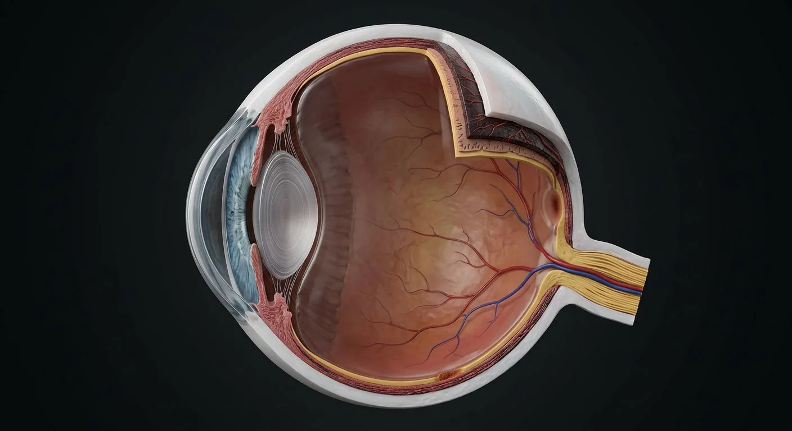

How this part of the body works
The globe has an outer fibrous tunic (cornea and sclera), vascular uvea (iris, ciliary body and choroid) and inner neural tunic (retina). Aqueous from ciliary processes flows posterior chamber → pupil → anterior chamber → trabecular meshwork/Schlemm canal or uveoscleral routes. Corneal epithelium, Bowman layer, stroma, Descemet membrane and endothelium are the classical five-layer teaching scheme; some texts describe an additional pre-Descemet layer. Retina transforms light to neural signals; the optic disc lacks photoreceptors.
Read the anatomy, part by part
These 19 structures correspond to the chapter’s regional illustration or schematic. Each entry separates location, function and a clinical point.
Corneal epithelium
Surface stratified nonkeratinizing epithelial layer.
What it doesBarrier and smooth refractive surface.
Clinical connectionAbrasion causes pain because the cornea is richly innervated.
Bowman layer
Acellular anterior limiting layer beneath epithelium.
What it doesAdds anterior structural support.
Clinical connectionDamage may scar rather than regenerate as normal layer.
Corneal stroma
Organized collagen lamellae form most of corneal thickness.
What it doesPrecise collagen arrangement maintains transparency.
Clinical connectionEdema disrupts transparency.
Descemet membrane
Basement membrane of corneal endothelium.
What it doesSupports endothelial monolayer.
Clinical connectionCan develop folds with corneal edema.
Corneal endothelium
Single posterior cell layer lining anterior chamber.
What it doesPumps fluid from stroma to maintain optical clarity.
Clinical connectionCell loss may cause persistent edema.
Sclera
Opaque collagenous external coat continuous with cornea at limbus.
What it doesProtects and preserves globe contour.
Clinical connectionExtraocular muscles insert into sclera.
Iris and pupil
Pigmented iris surrounds adjustable central pupil.
What it doesControls light entry via sphincter and dilator pupillae.
Clinical connectionDirect/consensual light reflex requires II afferent and III efferent.
Ciliary body
Ring with ciliary processes and muscle between iris and choroid.
What it doesMakes aqueous and adjusts zonular tension for accommodation.
Clinical connectionCiliary processes produce aqueous.
Zonular fibers
Fine ligaments linking ciliary processes to lens equator.
What it doesTransmit tension to crystalline lens.
Clinical connectionDisruption permits lens subluxation.
Crystalline lens
Transparent avascular biconvex structure in capsule behind iris.
What it doesChanges shape to fine-tune focus.
Clinical connectionOpacity is cataract.
Posterior chamber
Narrow aqueous space behind iris and before lens/zonules.
What it doesReceives newly secreted aqueous.
Clinical connectionNot the large vitreous chamber.
Anterior chamber
Space between corneal endothelium and anterior iris/lens plane.
What it doesConducts aqueous to drainage angle.
Clinical connectionAngle configuration influences glaucoma risk.
Trabecular meshwork
Porous tissue at iridocorneal angle leading to Schlemm canal.
What it doesMain conventional aqueous drainage pathway.
Clinical connectionOutflow resistance raises intraocular pressure.
Canal of Schlemm
Circumferential channel draining trabecular aqueous to episcleral veins.
What it doesReturns aqueous to venous circulation.
Clinical connectionNot a blood vessel supplying the retina.
Choroid
Pigmented vascular layer between retina and sclera.
What it doesSupplies outer retina, especially photoreceptors.
Clinical connectionChoroidal disease can damage central vision.
Neural retina
Layered light-processing tissue with rods, cones, interneurons and ganglion cells.
What it doesConverts light into optic-nerve signals.
Clinical connectionDetached neurosensory retina loses support from RPE.
Macula and fovea
Posterior central retinal specialization with densely packed foveal cones.
What it doesHigh-acuity central vision.
Clinical connectionMacular disease disrupts reading and fine detail.
Optic disc
Site where retinal ganglion axons and central retinal vessels exit/enter.
What it doesForms optic nerve and retinal vascular entry.
Clinical connectionNo photoreceptors: physiological blind spot.
Vitreous body
Transparent gel behind lens occupying the vitreous chamber.
What it doesSupports globe and transmits light.
Clinical connectionVitreous traction can produce floaters or retinal tears.
Deeper structures and tissue layers
These 1 additional entries give anatomical context. They are deliberately not assigned a photographic pin on the regional image.
Related deep chapters: Retina · neural microanatomy.
Internal limiting membrane
Müller-cell endfeet make retinal inner boundary against vitreous.
What it doesSupports vitreoretinal interface.
Clinical connectionEpiretinal traction can distort macula.
Five questions about Eye · microscopic layers
Short answers grounded in the structures described above. Use the illustrated guide for anatomical context.
What are the three main coats of the eyeball?
The outer fibrous coat is cornea and sclera; the middle vascular coat is the uvea; the inner neural coat includes the retina.
Which layers make up the cornea?
Corneal epithelium, stroma and endothelium are major components, with Bowman and Descemet layers between them in standard descriptions.
What is the corneal epithelium?
Surface stratified nonkeratinizing epithelial layer. Function: Barrier and smooth refractive surface.
Where is the corneal stroma located?
Organized collagen lamellae form most of corneal thickness. Function: Precise collagen arrangement maintains transparency.
What is the function of the corneal endothelium?
Function: Pumps fluid from stroma to maintain optical clarity. Single posterior cell layer lining anterior chamber.
Related anatomy guides
Follow these connected structures and body systems in the illustrated atlas.
 EyeSagittal section: an optical instrument that focuses light onto a neural film.↗
EyeSagittal section: an optical instrument that focuses light onto a neural film.↗ Retina · neural microanatomyRods, cones, bipolar and ganglion circuits; fovea, optic disc, pigment epithelium and dual blood supply.↗
Retina · neural microanatomyRods, cones, bipolar and ganglion circuits; fovea, optic disc, pigment epithelium and dual blood supply.↗ Facial nerve · CN VIITrack facial motor branches, taste, lacrimation and salivation through the temporal bone and parotid gland.↗
Facial nerve · CN VIITrack facial motor branches, taste, lacrimation and salivation through the temporal bone and parotid gland.↗ Trigeminal nerve · CN VMap facial sensation and masticatory motor fibers without confusing trigeminal CN V with facial CN VII.↗
Trigeminal nerve · CN VMap facial sensation and masticatory motor fibers without confusing trigeminal CN V with facial CN VII.↗Further reading
General anatomy references and related source chapters for continued study. These links do not make the digital illustrations clinical images or certify every anatomical variant.
This educational material does not provide medical advice, diagnosis or treatment. A named clinical reviewer has not been claimed for this page.
Open the interactive plate, pins, animated schematic and self-test.